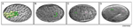

lumen
Figures
PhaFIG 1 - Cell nuclei positions
in the pharynx
PhaFIG 2 - Pharynx anatomy

PhaFIG 3A-D - Embryonic
development of the digestive
tract
PhaFIG 3E-G - Embryonic
development of the digestive
tract
PhaFIG 4A-D - The anterior
digestive tract is formed by the
alignment of a series of cells
PhaFIG 4E-I - The anterior
digestive tract is formed by the
alignment of a series of cells
PhaFIG 5A-C - Pharyngeal
epithelium
PhaFIG 5D&E - Pharyngeal
epithelium
PhaFIG 6A-C - Muscle cells of
the pharynx

PhaFIG 6D - Muscle cells of the
pharynx
PhaFIG 7A - Marginal cells of the
pharnyx
PhaFIG 7B&C - Marginal cells of
the pharnyx
PhaFIG 8A-G - Gland cells of the
pharnyx
PhaFIG 8H - Gland cells of the
pharnyx

PhaFIG 9A-E - Pharyngeal
neurons
PhaFIG 9F-H -Pharyngeal
neurons
PhaFIG 10A&B - The processes of
three of the pharyngeal neurons
PhaFIG 10C-J - The processes of
three of the pharyngeal neurons
PhaFIG 11 - Sensory neuron
endings in the pharynxl
PhaFIG 12 - Structure of the
pharyngeal valve
PhaFIG 13 - Structure of the
pharyngeal valve
PhaTABLE 1 - Characteristics of
pharyngeal muscle cells and
marginal cells
PhaMOVIE 1A&B - 3-D reconstruction of the
development of the
pharynx ventral and left views
PhaMOVIE 2 - 3-D reconstruction of the development of the
pharynx part 2
PhaMOVIE 3 - 3-D reconstruction
of pharyngeal gland cells
PhaMOVIE 4- 3-D reconstruction
of how VPI cells stack